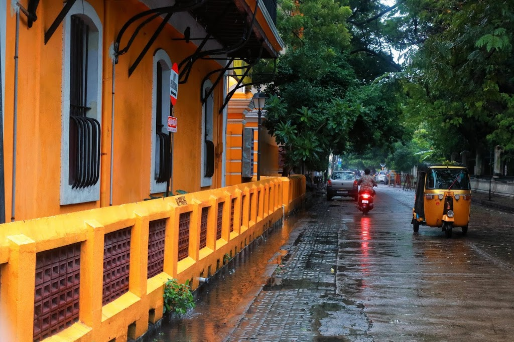
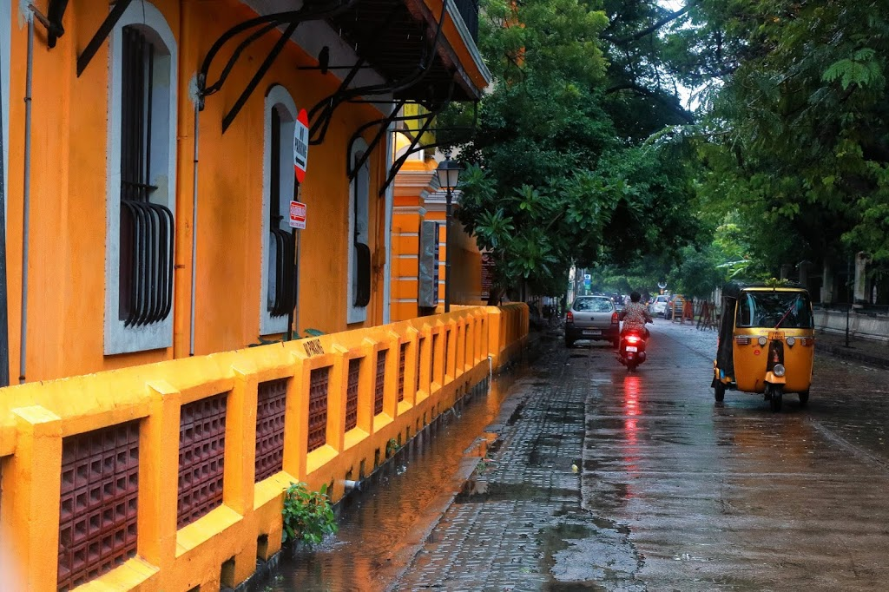

Welcome to Pondicherry Travel Guide
Discover the Beauty of Pondicherry, The French Capital of India!
 

Listen to Songs While Travelling to Pondicherry
Watch the Pondicherry Travel Guide Video
Click here to avail accommodation options in Pondicherry
Explore Pondicherry on Google Maps